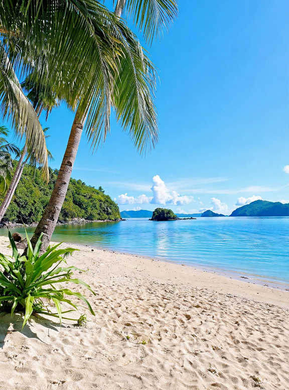

Port Barton is a small fishing village on Palawan's west coast, part of the municipality of San Vicente, about three hours by van north of Puerto Princesa. It has one main beach, a bay full of small islands, sea turtles a short boat ride out and a pace that feels years behind El Nido. Island-hopping tours run around ₱1,400 to ₱1,700 per person, simple fan rooms start at roughly ₱500 a night, and two or three nights is enough for most people.
What makes the village appealing also makes it a little awkward. Cash, power and phone signal are less reliable than in the bigger towns, and the road in is the only practical way for most visitors. This guide covers the beaches, the boat tours, what a few days cost, how to get there and a simple plan for your stay, along with the small things that are easier to sort out before you arrive.
Prices below are a guide to what visitors have been paying through 2026. Fuel surcharges have pushed van and boat fares up, so check the current rate when you book.

Is Port Barton Worth It?
It suits travellers who want calm water, snorkelling and early nights, and who don't mind simple rooms. You get clear turquoise water and island views without a crowd at every stop. Boats are smaller, the bay is sheltered for much of the dry season, and the village is easy to walk end to end.
It is less suited to anyone who needs fast internet for work, round-the-clock air conditioning or a busy nightlife. Families with very young children may also find the long van ride and basic facilities tiring. If that sounds like you, Puerto Princesa or El Nido will be easier.
Beaches In and Around the Village
Port Barton Beach
The main beach, also called Itaytay Beach, runs along the front of the village. Guesthouses, restaurants and tour stalls line the sand, and the bangkas pull up right in front of them. It is a working beach rather than a perfect swimming spot, but the water is usually calm and the sunsets over the bay are the evening's main event.
White Beach and the coastal walk
A path from the end of the village leads over the headland to quieter beaches further along the coast, including White Beach. Wear proper footwear, bring water and start early, since there is little shade. If you don't want to walk back, ask a boatman on the beach about a ride and agree the price first.
Long Beach
San Vicente's famous Long Beach is not in Port Barton itself. It lies further north, around an hour away by private boat or longer by road. Our San Vicente Long Beach guide explains how the town, the beach and Port Barton fit together, and how to do Long Beach as a day out.
Island Hopping: How the Tours Work
Most people come for the boat tours. Operators sell them as lettered routes, and Tour A is the standard first choice. A typical Tour A day includes a starfish sandbar, Twin Reef, a beach lunch on one of the islands, Exotic Island and the turtle snorkelling spot, with boats leaving around 9 in the morning and returning around 4 or 5 in the afternoon. Other tours swap in different reefs, islands and, on some routes, Bigaho Falls.
- Shared tours: around ₱1,400 to ₱1,700 per person, usually with lunch and snorkel gear.
- Environmental fee: about ₱200 per person. Some operators include it and others collect it at the pier, so ask which one applies.
- Private boat: worth it for a group of four or more, or if you want to pick your own stops. Agree the route, lunch and fees before you leave.
The turtles are wild, and sightings are most reliable from December to May. Keep your distance, don't touch or chase them, and skip sunscreen that isn't reef-safe. If the outer bay is closed because of the weather, tours stick to the sheltered islands closer to the village.
German Island
Inaladelan Island, which most people call German Island, is a privately run island a short boat ride from the village. It is a common lunch stop and some operators offer day trips or simple overnight camping there. Ask your guesthouse about current rates, since they change from season to season.
Waterfalls and Other Things to Do
Pamuayan Falls is the easiest waterfall to reach without a boat. You can go by motorbike, which takes around 30 to 45 minutes from the village, or hike a forest trail that is easy to lose, so a local guide is worth hiring. Bigaho Falls is further away and is usually visited on a boat tour. Both are best after some rain and can be thin at the end of the dry season.
Kayaks can be rented by the hour along the beach, and they are a good way to paddle to nearby coves on calm mornings. Evenings are spent eating grilled fish, drinking a beer at a beach bar and watching the sun go down over the bay.
Budget: What a Few Days Cost
These are planning ranges for one person sharing a room, based on prices seen in 2026. Bring more if you want beachfront rooms or private boats.
Bring enough cash
Most guesthouses, restaurants and boat operators are cash only. The village's ATMs have been known to run out of money in peak season and to charge high fees, so withdraw what you need in Puerto Princesa or El Nido before you arrive.
Getting There
From Puerto Princesa
Shared vans run several times a day, starting early in the morning and finishing late in the afternoon. The ride takes about three to three and a half hours, and several companies offer pickups at the airport or your hotel for an extra fee. Morning departures are the safest choice if you are arriving on an early flight. If you are still planning how to reach Palawan, our guide on choosing the right Palawan airport compares the three entry points.
From El Nido
Vans also run between El Nido and Port Barton, usually twice a day, and take about four to five hours. Check that your ticket says Port Barton, since some vans only go to San Vicente town.
Continuing north or south
Port Barton sits neatly between Puerto Princesa and El Nido, which is why many travellers stop here for a few nights instead of doing the whole road in one go. Our guide to the Puerto Princesa to El Nido van ride covers seats, stops and what to pack for the journey.
Practical Things to Know
- Power: supply has been patchy for years, and some places rely on solar or generators. Ask your guesthouse what hours they have power and whether they run a backup.
- Signal and Wi-Fi: both are slow, so download maps and bookings before you arrive.
- Health: there is only a basic health centre in the village. Anything serious means a trip back to Puerto Princesa.
- Weather: November to April is the drier, calmer period. From June to October, the southwest monsoon brings rain and rougher seas, and tours can be cancelled on short notice.
- Bookings: rooms fill up from December to March, so reserve ahead in those months.
A Simple 3-Day Itinerary
This plan gives you one full day on the water and a slow start on either side. It works in either direction, so flip it if you are coming down from El Nido.
Day 1 · ArrivalInto the village and onto the beach
- MorningVan from Puerto PrincesaAbout 3 to 3½ hours; ask for an airport pickup if you land early
- AfternoonCheck in and swim off Port Barton BeachThe water in front of the village is usually calm
- EveningSunset dinner by the bayGrilled fish and rice from a beachfront restaurant
Withdraw cash in Puerto Princesa before the van leaves. The village has few ATMs, and they run dry in peak season.
Day 2 · On the waterIsland hopping on Tour A
- 9 AMBoat leaves from the beachCarry the environmental fee in cash in case it isn't included
- MorningStarfish sandbar, Twin Reef and the turtle spotGive the turtles space and use reef-safe sunscreen
- MiddayBeach lunch on one of the islandsUsually part of the tour price
- Late afternoonBack in the village around 4 or 5 PMEarly dinner and an early night
If the outer bay is closed because of the weather, tours stay among the sheltered islands near the village.
Day 3 · OnwardA morning on land, then the road
- MorningWalk to White BeachStart early and take water, since there is little shade
- OrRide out to Pamuayan Falls₱200 to ₱300 return; best after some rain
- AfternoonVan to El Nido or back to Puerto PrincesaAbout 4 to 5 hours to El Nido, 3 to 3½ to Puerto Princesa
With a fourth day, add a second tour or a boat trip to Long Beach.
Port Barton rewards travellers who arrive with cash, low expectations for Wi-Fi and a flexible plan for the weather. Give it at least two nights, and it makes a calm break on the road between Palawan's busier towns.


Comments
No comments yet. Been here recently? Share a tip or ask a question.
Leave a Reply